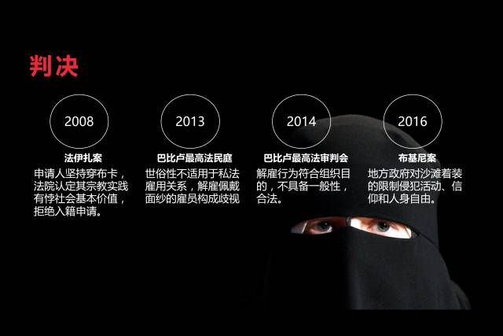
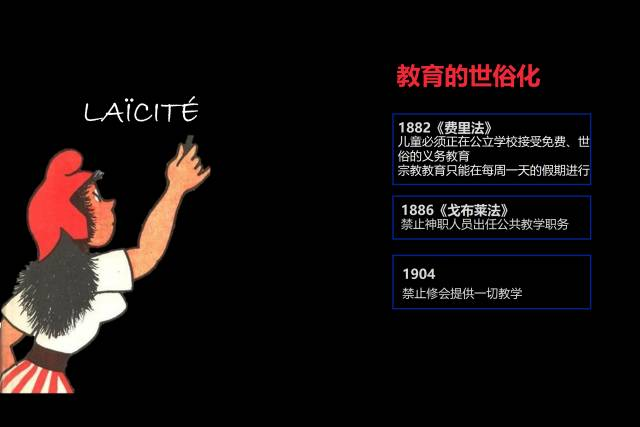
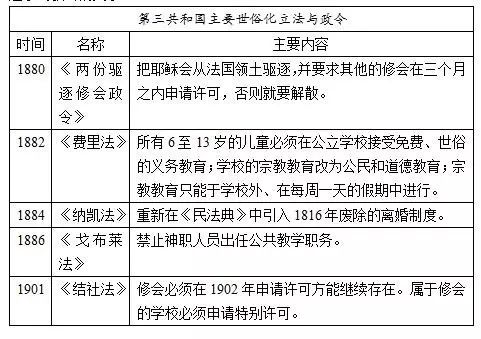
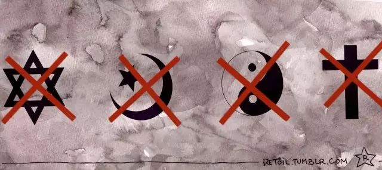

收录于合集
以下文章来源于三会学坊 ，作者朱明哲
三会学坊 .
“叁會學坊”旨在积聚同道，于术业专攻中求会通，在切磋琢磨里观天下。
[摘要] 作为法国宪法原则的世俗性因为近年涉及穆斯林服饰的判例而受到限制宗教自由的指责。但这些指责背后存在着误解法国世俗性斗争面向、把世俗性等同于政教分离的问题。法国的世俗性原则更多体现为一种斗争性的原则，因此区别于英美及其他欧洲国家的政教关系模式。在世俗性形成的第三共和国（1870-1940）时期，政府采取各种立法措施以降低天主教会的政治影响力，并在此基础上同时巩固了共和政权、保护了个人相对教会的自由。世俗原则进入宪法后，在法律实践中主要作为限制国家权力的规范，可在特殊场合——如学校——承认教师对学生服饰的管理权。从结果上看，确实是少数宗教的成员成了法律限制的对象。法国社会本身排斥宗教因素之表象、成为新国民认同的世俗性、作为正式组织之教会的缺失才是令问题变得棘手的关键。
**[关 键词] **世俗性 共和主义 第三共和国 法国穆斯林
一、 导论 ****
在美国，教权与世俗权力并立但彼此尊重的“政教分离”是处理国家与教会关系的主要模式。法国则采取了另一种模式，政权凌驾于教权之上、由国家界定宗教活动的范围、教会的组织管理和个人信仰空间。长期以来我国学界对前者关注较多，对后者关注不足。[1]本文希望对法国在历史中形成的、不同于政教分离的“世俗性原则”内涵进行剖析，以期补充我国对宗教关系的研究。本文的基本立场是，法国以“世俗性”不同于政教分离，也不同于宗教自由。以“世俗性”名义进行的一系列制度实践主要表现为国家对宗教组织的限制，从而具有重要的斗争面向。
目前，世俗化原则面对的主要问题是法兰西共和国的法律与伊斯兰教之间的紧张关系。一方面，《法兰西共和国宪法》第1条第1款庄严宣布：“法兰西为一不容分割、世俗的、民主的社会共和国。国家确保不分地域、种族、宗教之所有公民，在法律上一律平等。”另一方面，关于穆斯林个人宗教实践和共和国价值的诉讼最近十数年内频发于法国，又促使人们质疑世俗性和法律上平等的落实。其中最近三个案件尤其具有代表性：包含了从基层法院一直上诉到最高法院的“巴比卢（或狼宝宝）幼儿园案”（Affaire de la crèche Baby Loup）[2]，在今年夏天引起了很多关注的“布基尼禁令案”[3]，还有知名度较低的“法伊扎案”（Faiza）[4]。法学家最核心的工作是在具体的个案中确定法律的意义。所以和三个案件有关的诉讼自然而然会触及许多法律技术问题。但不同价值之间的冲突也在司法剧场中展现，以至于人们无法任由它们隐藏在法律技术背后。本文将证明，对最近诉讼的准确理解需要回溯“世俗性”在法国的实践史。
仅仅使用Ngram的词频分析就可以知道，“世俗化”在19世纪70年代突然出现在法语文献中。“世俗性”也在1871年11月11日的《祖国报》（La Patrie）上首次使用。“世俗化”的使用频率在1885到1890年间达到巅峰，短暂地回落但是很快回升，在1905到1910年之间重新达到一个高潮并再度迅速回落。第二次世界大战结束后，法语中世俗化的使用频率再次上升，并在20世纪70年代末追平此前的纪录后一再攀升。“世俗性”的使用稍有不同：从1940年开始，其使用频率缓慢增长至1960年左右，然后在70年代与“世俗化”一起增加，但是增长的幅度不如后者。对语言使用的分析首先说明一个重要的概念区分：作为过程表现的“世俗化”要比作为状态性质描述的“世俗性”在历史上扮演着更有意义的角色。
另一个经由上图得到说明的是，1905年并非法国世俗化最具决定性的时刻。1905年的《教会与国家分离法》（Loi du 9 décembre 1905 concernant la séparation des Eglises et de l’Etat）只是19世纪80年代以来一系列建立世俗共和国的努力之阶段性成就。1905年既不代表世俗性的实现，也不代表世俗化的终结，因为“世俗性”并不等同于“政教分离”。1946年的宪法第1条首次把法兰西定义为“世俗的共和国”，重新振奋了世俗化的事业，这一条延续至今的宪法规定也成了1958年第五共和国成立后一系列争议的焦点。大概在1968年“五月风暴”的同时，对世俗化语言的使用也再次开始迅速增长。
第一次世界大战的开始到第五共和国建立的最初十多年是人们对“世俗化”和“世俗性”讨论较为平稳的一段时间。它区分的两个时段中，世俗化有不一样的外表。1914年以前的世俗化主要表现为共和国对天主教会的压制和剥夺。1958年之后的世俗化以不同社会团体之间的矛盾为形式表现出来。但背后最核心的、始终不变的无非是有组织的中间团体如何于共和国中存在的问题。最简明扼要的说法是，从第三共和国建立开始，共和主义的实践就拒不接受任何围绕中间团体而组织的社会生活，因为“在社会生活中，个人与生俱来的永恒自由与权利可能受中间团体的限制”。[5]正是在中间团体（教会、工会、行业协会等社会自组织团体）问题上，世俗性展现了它的双重面向：它以保护个人和国家免受中间团体影响为目的，又以对中间团体的限制作为手段。所以，可以说有两种世俗性：自由的世俗性（laïcité libérale）和斗争的世俗性（laïcité combative）。[6]也可以说是法国世俗性的两种不同面向。
如果仅仅关注“世俗性”所蕴含的自由面向，人们很容易忽略，为了在一个带着不可磨灭的天主教烙印的社会上建立一个世俗共和国，共和派和天主教会之间的斗争一度非常激烈。目前法国一系列关于世俗政府与宗教组织之关系的讨论，都应当放在世俗化过程中共和国致力于消除社会组织力量的历史背景中理解。1914年以前和1946年之后两个不同时段的对比将会证明上述假设。但在此之前，有必要先从最近的几个判例入手探讨，以便说明理解目前紧迫的矛盾必须以理解世俗性的斗争面向为前提。
二、司法中的世俗性：以宗教服饰为例
2008年，一位原籍摩洛哥的妇女法伊扎（Faiza）坚持在前往市政厅时穿着包裹全身的“布卡”（Burqa），最高行政法院因此认定她的宗教实践“过于极端，且无法与法国共同体的基本价值、特别是性别平等的价值相符”。[7]所以最高行政法院认为政府根据《民法典》原第21条第4款有权以“无法融入”为由拒绝入籍申请。类似的情况发生在在2013年的“阿贝尔坎案”中。原籍阿尔及利亚的默罕穆德•阿贝尔坎（M’hammed Aberkane）在与一位法国人结婚后申请加入法国国籍，却遭到拒绝，因为最高行政法院认为上诉人的材料证明他“拒绝接受法国社会的基本价值，特别是男女平等”，所以当局对他“无法融入”的判断于法有据。[8]
2016年8月5日，法国南部尼斯市所辖市镇卢贝新城（Commune de Villeneuve- Loubet）以市政府决定的方式，禁止在海滩上穿着专门为穆斯林妇女所设计、包裹全身只露出脸庞的泳衣“布基尼”（Burkini）。人权团体向行政法院起诉要求撤销该决定，案件一直上诉到最高行政法院。最高行政法院认为，地方长官仅能在“适宜、必要和合乎比例”的限度内，以避免公共秩序受到危害为目的限制个人自由，且限制必须在存在现实危险的情况下作出。但并没有证据证明在海滩上穿着布基尼会妨害公共秩序。系争命令还构成了“对活动自由、信仰自由和人身自由等基本自由严重且明显违法的妨害”。[9]最高行政法院据此暂停了政令的执行。
在法国社会引起广泛讨论的巴比卢案中，法蒂玛•阿费夫（Fatima Afif）自1992年起于私立巴比卢幼儿园工作，并成为副园长。从2002年到2008年，她相继休了产假和子女养育假（congé parental d’éducation）。期间，她收到园长发来的通知，告知根据2003年生效的内部规定，她以后将不能继续在工作中佩戴面纱。2008年12月9日，当她如常佩戴面纱前往工作场所时，受到了园方的警告，并最终于12月18日——在她多次坚持佩戴面纱出现在幼儿园之后——接到通知：她已遭解雇，因为违反协会在人员管理方面的世俗性和中立性原则。在反歧视组织的支持下，阿费夫向地方劳动法院提起诉讼。地方法院认为该幼儿园虽然是私人机构，却承担公共服务职能，所以世俗性原则应该得到适用，判决幼儿园的解雇决定有效。凡尔赛上诉法院虽不同意劳动法院的理由，但是认为私人机构为了实现自身目的而实施的内部管理措施只要不违背合目的性和比例适当性，便可以限制员工个人自由。[10]然而最高法院社会法庭在2013年推翻了凡尔赛上诉法院的判决，因为“《宪法》第1条所称之世俗性原则并不适用于私法上的雇佣关系。该原则不应阻碍劳动法上雇员权利的实现”，而且内部管理上的限制是《劳动法典》L-1321条第3款所谓一般的、不明确的限制，构成了歧视。[11]案件发到巴黎上诉法院进行重审。
巴黎上诉法院则维持了一审判决，并为此首次提出了“信念事业”（entreprise par conviction）的概念。巴黎上诉法院认为巴比卢虽然是一私立幼儿园，其本身存在的目的却是为来自经济和社会上贫弱家庭的孩子提供良好的照顾和教育、为不同出身背景和信仰的女性提供就业机会，所以它实际上服务于公共利益。在此前提下，该幼儿园必须为所有孩子的成长提供平等、对任何宗教没有偏见的环境，那么其员工受制于世俗性和中立性原则也就是合法的了。[12]最后，该案再次上诉至最高法院，最高法院全席审判委员会（Assembléeplénière）虽然否定了巴黎上诉法院所谓“信念事业”的立场，却判定解雇行为合法。其主要理由是：“在一个只雇用18名员工、可以与孩子的家长建立直接关系的幼儿园中，对员工的宗教自由作出明确限制的内部规则仅仅具有为实现组织特殊目的的性质，而不具备一般性，且足够清晰明确，因而既合法又合比例”。[13]

上述各诉讼在外观上的共性是它们都直接由穆斯林妇女的穿着引起，但法律上的争点有所区别。在拒绝入籍案中，最高行政法院决定的正确性取决于对《民法典》第21条第4款中“无法融入”的理解是否正确。在布基尼禁令案中，最高行政法院暂停地方政府行政决定的正确性取决于对地方政府行使警察措施权力范围的理解是否正确。在巴比卢幼儿园案中，最高法院全体会议决定的正确性显然取决于对《劳动法典》L.1321条第3款（内部管理规定的认定）和L.1121条第1款（限制个人权利与自由的条件）的理解是否正确。通过法律技术完全可以在个案中解决争议。但是，同样明显的是，在拒绝入籍案中行政法官借助“法国社会基本价值”，在布基尼禁令案中行政法官倚重“信仰自由和人身自由”，劳动法院、凡尔赛和巴黎的上诉法院和最高法院的社会庭则认为对“世俗性”的理解是解决问题的根源。[14]更何况，最高法院全体会议把一项对整个私立机构所有雇员都适用的内部管理规则解释为“非普遍”的规则，本身就是让政治性理解替代法律理解的解释。[15]所有这些价值性的论证语言说明，在由各种法律技术织就的精密法网之后，所有诉讼都涉及如何理解《法兰西共和国宪法》第1条第1款提到的“世俗的”。无论是是否适用、如何适用，类似的法律争议无法完全回避世俗性问题，或者说2000年以来法国世俗性原则面对的挑战。[16]
三、理解世俗性 ****
前引判例说明，无论是公权机关还是私立机构都以“世俗性”的名义试图限制个人表露其宗教身份的行为。世俗性的自由面向在于通过限制社会运作中的宗教机构以保护个人的宗教自由，斗争面向则在于它打压作为社会- 政治组织的宗教团体。如果人们认为难以用世俗性原则正当化一系列限制宗教实践的立法和判例，原因恰恰是要么认为世俗性只具有自由面向，要么是认为可以用自由面向完全取代斗争面向。 实际上，斗争性的一面在世俗性的制度实践中占据了并不亚于自由性的地位。但是在此之前需要首先简单解释一下本文所理解的“世俗性”概念。
法学和政治学领域谈论的“世俗性/世俗化”（laïcité/laïcisation）与宗教社会学家谈论的“世俗化”（sécularisation）有所不同。简单地说，在宗教社会学上，sécularisation意味着宗教在文化和社会生活中的边缘化。在同一个文本中如果使用宗教社会学意义上的“世俗化”（sécularisation）和法律- 政治意义上的“世俗化”（laïcité/laïcisation）会很容易导致混乱。一个简单的建议是把作为名词的“laïcité”翻译为“政教分离”，并认为这是该词的本意。为何本文仍采取现在的翻译呢？因为这种观点的潜在风险是（1）暗示“laïcité”等同于《分离法》，同时（2）也遮蔽了这个极具法国特色的概念与英美式“政教分离”的重大区别，而且还（3）假定一个政治- 法律术语有一个确定的内涵、忽视给定历史时期的政治实践为其添附的复杂意蕴。
先讨论支持翻译成“政教分离”的理由。根据权威法学专业术语词典的解释，1958年宪法中使用的形容词“世俗的”指“独立于一切信仰的”。[17]而国家的“世俗性”指的是“法兰西共和国源于1905年《分离法》并在1946年《宪法》中宣称的信仰中立性”。[18]如果对世俗性的分析到此为止，认为它等同于国家在宗教事务的中立性、从而可以等同于政教分离，倒也未尝不可。但是字典进一步指出，这个概念包括了以下方面：（1）法国政府的非神权属性；（2）所有的公权力集中于国家部门，任何宗教权威都不得参与其中；（3）在不构成对公共秩序威胁的情况下尊重信仰自由和宗教自由；（4）尊重在意见和信仰方面的多样性。[19]如果仅看解释，似乎我们所说的世俗性和政教分离之间的区别仍不明显，好像只是同一个意思不同的表达。
然而一个需要考虑的问题是：我们在理解一个宪法概念时，究竟是把它作为一种韦伯式理想类型、甚至一种教条来理解，还是关注人们在具体语境中使用它时所能够做的事情？两种立场分别对应罗蒂所谓的“合理性重构”和“历史重构”。[20]从规范出发考虑如何解释概念最能体现人们善良意愿、维护宪法秩序本身的体系性和融贯性，无疑是一种重要的学术活动。但是也要看到，这种取向并不具有垄断性的地位。基于以下原因，研究人们在历史上使用一个概念时“到底发生了什么” [21]仍然是重要的：（1）每个群体在使用概念的时候可能强调的是不同的侧面，比如同样是“世俗性”，传统教会使用时可能强调国家的不干预，反教权人士可能强调国家对宗教势力的免疫力，而少数教派可能强调对多样性的尊重；[22]（2）上一部分所列判例在法国社会引发争议说明，仅仅诉诸一个概念在现代政治理论中的“本意”可能无法充分理解法律秩序中存在的多种可能性；（3）宪法概念在实践中引起的多种可能性是因为历史上使用该概念的实践本身所导致的。所以，本文主张在合理性重构一个概念的“本意”并以此批判现有的司法实践之前，先重构概念实践的历史。
实际上，关于伊斯兰服饰的判决之所以在法学界引起争议，恰恰部分是因为对概念“本意”的教条式理解。我们的同行低估了实践为概念增加的复杂性。一些法学家批评司法机关把象征个人解放的原则变成了排外主义和伊斯兰恐惧的借口。[23]另一些法学家主张要点在于个人的表达自由、宗教自由与世俗性之间的张力。[24]提出以上观点的人都是社会法或社会史领域值得尊敬的学者，但他们理想化、浪漫化了世俗化的历史，从而无法正确地理解法国语境下的世俗性。简单地说，他们都把自由面向看作世俗性的唯一面向，从而把世俗性单纯看作个人自由界限或者基本权利保护的问题。在自由主义解释框架下，“世俗性意味着一个国家在宗教意义上是中立的，由一个完全与教会分离的政治权力管理，而且不主张任何宗教原则”。[25]国家并不具有任何的宗教倾向，惟其如此能够保护个人的宗教自由。[26]一位对宗教自由毫无兴趣的人士——教皇庇护九世（Pius IX,1792~1878）——在《谬误举要》中所驳斥的“国家必须与教会分开，教会也必须与国家分开”，反过来证明自由主义解释是一种保证宗教自由和宽容的立场。[27]如果以世俗性的名义否定某种基于宗教信仰的行为，就成了对个人宗教自由的威胁和不宽容。
但是，世俗性原则存在首先肯定不是个人的宗教自由的必要条件，更不等同于宗教自由。公权力的世俗性并不是宗教自由的逻辑前提，否则就必须主张那些有教务专约（concordat）的国家（如西班牙、意大利、波兰、巴西）和确立国教的国家（如英国、挪威、瑞典、丹麦）并不保护宗教自由。这种结论显然是过于傲慢的。所以世俗性原则作为一个法律规范应该与宗教自由区分。
强调《欧洲人权公约》第9条却忽略从1946年《宪法》延续至今的世俗性原则无异于掩耳盗铃。只要依然用自由主义的方式把世俗性看作政教分离的同义词、宗教自由的保护者，那么人们就算可以通过上述判例对宗教自由的界限了解更多，却仍然无法说明世俗性为何现在备受争议。尤其无法解释的是以下不仅困扰着学者、也困扰着公众的问题：世俗性原则正当化了一系列立法、并在司法中多次出场，但几乎每次受到限制的都是在人口中仅占5%左右的穆斯林？[28]下文将要说明的是，在世俗化的历史上，斗争的世俗性比自由的世俗性更加重要，然后指出社会变迁与世俗性原则之间的张力。
四、斗争的法律（1870~1914） ****
第三共和国建立到第一次世界大战之间的四十余年是法国世俗化运动的第一次高潮，称之为奠基的年代也不为过。共和派政府通过了一系列立法努力使法国成为一个世俗国家。在奠基的年代里世俗化在大部分情况下绝非个人自由的保障，而是国家对中间团体的打压，并因此可能成为对个人自由的威胁。
1869年，普法战争前夕，美丽城的选民向他们的代表、享有“第三共和之父”美誉的甘必大（Léon Gambetta, 1838~1882）提出了《美丽城方案》（Programme de Belleville）。方案中确定了平等、世俗化、民主政治、共和政体等后来成为第三共和国基石性理念的原则。《美丽城方案》第7条在巴黎公社1871年4月1日的政令中细化为国家与天主教会分离、取消国家支付给教会的预算、教团财产适用一般民法等具体安排。上述政治文件都可以视为世俗性原则的先声，并为第三共和国时期系统、持续的世俗化政策奠定了基础。
“敌人乃教权主义也！”（ « Le cléricalisme ? Voilà l’ennemi ! »）1877年5月4日甘必大以如此铿锵有力的句子作为自己在国民议会演讲的结语。[29]如果说这位出色的机会主义者还有什么政治信念的话，反教权主义肯定是其中之一。[30]其他建立第三共和国的共和派政治家也和甘必大一样相信，一个共和政体只能在把教权等与旧制度相连的因素彻底扫清后才能建立。[31]持自由主义解释的作者也不得不承认：“英美式的宗教自由主义更多保护个人免于国家干预，法国式的则希望同时保护国家，因为它更倾向于认为时刻准备在政治上反戈一击的宗教组织就隐藏在个人宗教和思想自由的背后。”[32]其结果是，在整个第三共和国时期，以世俗化之名进行的改革是全面且深刻的。在教育、家庭和社会组织三方面的立法都可以佐证。

首当其冲的是教育领域。费里（又译“茹费理”，Jules Ferry, 1832~1893）在教育部长和教育委员会主席任上的一系列改革先把宗教课程排除在了初等教育的课程表之外。他的继任者延续了其思路，并进一步把神职人员从公立教育中排除。不仅要通过各种法律规范把教会从社会生活中驱逐出去，共和派政府还要革思想的命。所以小学生所用的教科书中用大量篇幅夸大高卢文明的成就，把皈依天主教的克洛维斯一世（Clovis I, 466~511）称为“野蛮人”，从而强调天主教的外来性。还有大量的内容展现天主教会迫害异端和压制科学理性的历史。[33]曾经可以确保一半以上的小学生接受神职人员进行的宗教教育的情形一去不复返。虽然为了避免大规模的反对情绪，悬挂在小学教室里的十字架最终得以保留，但在师范学校接受了启蒙主义、实证主义、共和主义教育的小学老师把共和国的官方意识形态带到几乎每一个山村蒙童面前。[34]对科学与进步的推崇代替了宗教道德成为教科书的主导精神。[35]由共和派政府选任的学监出现在大学的课堂上，对教师讲课的质量和内容进行监控，特别留意是否发表了支持教权的言论。
私人生活也不例外。婚姻的有效性不以宗教仪式为前提。根据《民法典》57条，能够证明人的出生、姓名和父母的不再是洗礼登记，而是公证过的出生证明。婚姻的效力早已取决于是否在市政厅宣誓而非宗教仪式。利奥十三世（Léon XIII, 1810~1903）曾评论：“当社会通过把上帝从其心中驱赶而世俗化之后，人们最终会想要通过法律允许离婚。”[36]他的担忧很快成了现实。同样是出于反教权主义的考虑，1804年民法典引入、随后废止的两愿离婚和诉讼离婚在1884年回到了民法中，进一步降低了教会对世俗生活的羁縻。[37]
更激进的措施是对宗教团体管理的规定。在结社自由成为实证法所保护的自由之前，费里便签署法令驱逐耶稣会，并要求其他的修会只有在许可申请得到通过的情况下才能存续。但大部分的修会为了声援耶稣会，都没有向政府申请许可，所以他们也就理所当然地与耶稣会一样在19世纪80年代遭到驱逐。其中大部分修会前往西班牙。[38]也有许多耶稣会修士凭借其修会积累的财富来到远东，深刻介入了东亚法学现代化进程。类似的故事在1901年重演。确认结社自由的法律却没有承认神职人员的结社权，反而要求未经许可的修会必须解散。[39]政府降低了对社会团体管理力度的同时加紧了对天主教团体的控制。
不仅如此，1905年《教会与国家分离法》的名字掩盖了其扩张国家权力的实质内容。第1条宣告国家对信仰自由和宗教自由的保护之后，是其他条款为了确保教会无法再作为与国家并存的社会组织而对教会财产、人员进行的详细入微的安排。如第4条就规定“属于修院、神职人员的住宅、主教公署等公共宗教场所的动产和不动产……都由法定代表移转于依据确保宗教实践的组织规则运营的协会”。国家设立的机构代替了原有的宗教机构经营宗教事务，教区也得到重新划分。于是，国家以宗教自由保护者的姿态，在政教分离的旗号下堂而皇之地为教会的组织和运营立法。换言之，国家单方面确定了与教会的关系。

第三共和时期的“自由世俗性”是个人在私人领域中的自由，而不是宗教组织在公共领域的自由。相反，社会中的教会就是一系列世俗化立法的打击对象。共和派认为在天主教深入法国社会的特别环境中，摧毁天主教会是保护共和国的唯一道路。以上政令和法律极大限缩了教会继续行使公共职能的空间。与此同时，以基督教圣人命名的街道统一改名，政府也系统性地提拔反教权派人士。1880年的政令导致超过5000名宗教人士遭到驱逐（还不包括反教权主义当局从医院里赶走的神职人员）。[40]因为反修会的法律而选择流亡海外的宗教人士在20世纪初超过3万。[41]大学神学院从1885年起关停并转，取而代之的是把宗教作为一种“事实”研究的种种宗教科学。仅仅因为修会没有按照《结社法》申请许可，在1903年开学之前就有超过一万所学校关闭。[42]显然，宗教组织受到了很大的冲击。
可见，世俗化的进程一直伴随着共和派的反教权主义。在政治话语中，世俗化本身就是反教权主义实现的手段。在反教权主义看来，教会深刻介入俗世生活并把公共权威作为实现其目的之工具。[43]如果说1905年前一系列法律并不干预个人信仰自由，它们毕竟极大打击了作为社会组织的教会。哪怕不去考察更复杂的兵役制和通过一系列民法技术安排深刻改变的家庭结构，也不难看出此时世俗化的“自由面向”最多意味着让原子式的个人摆脱天主教会的权威。出生、接受教育、婚姻乃至死亡，人的一生可以不再与教会发生任何关系。但刚刚摆脱教会的个人立刻会发现自己面对的是无所不在的国家权力。在这个意义上，就算共和国确保了个人的自由，却也是通过与教会的斗争实现的。
五、法律中的斗争（1946至今） ****
上文论证了世俗性原则的产生史实际上是国家对教会的规训史。但在入籍案和巴比卢案中，承担不利后果的是穆斯林女性个体而非伊斯兰教会。在布基尼案中，市政当局也希望直接对沙滩上穿着布基尼的妇女个人采取警察措施。现在，斗争的世俗性仍是制度实践中重要的面向，但斗争的对象发生了改变。因为这种转变的根本原因恰恰是世俗化的法律成功地把法国社会中的宗教从一种强大的组织性力量变成了属于个人私生活领域的文化现象。国家在运用世俗性原则进行斗争的时候找不到可见的有组织教会，只好把所有压力置于个人身上。恰恰是在此意义上，第五共和国治下世俗性原则的法律实践在一个强大的、构成外于国家的竞争性社会秩序的教会缺位时，对原生性的天主教和外来性的其他宗教表现出了不同的样态。
两次世界大战和法国与教廷之间关系的正常化让共和派政府于1914到1946年之间减缓了世俗化的步伐。[44]世俗性原则在1946年成为了第四共和国的宪法原则，并经1958《宪法》一直留存至今。法学家希望把世俗性作为一个法律概念进行分析性的理解，但斗争性的意义保留在了法律的实践中，并在1995年以后再次成为基调。
法学家希望找到作为宪法原则的“世俗性”在法律上的解释。一个好的解释应当既对世俗性原则在法秩序中的独特地位给予足够的重视，又不令其与其他基本原则相矛盾。时任法国社会党（左派）总书记的摩勒（Guy Mollet, 1906~1975）在1959年评论新《宪法》的时候，认为“世俗”意味着三个原则：信仰自由、教会和国家分离、对所有信仰的尊重。[45]最高行政法院晚近的立场是，世俗性原则包括了三个方面：“不为宗教提供补贴，不指定官方宗教，国家的中立性。”[46]法学希望能在与世俗性相关的各种价值——包括宗教自由、表达和显露信仰的自由、对他人思想与信仰的尊重、对公共秩序的保护——之间维持微妙的平衡，“无论语境如何改变，任务总是一样的”。[47]不难发现，世俗原则与宗教自由、信仰自由的历史联结从第三共和国延续至今，但理解上发生了变化。法学家承认世俗性本身并不意味着宗教自由，而是内涵了许多可能对国家、个人和社会都提出不同要求的主张，所以才有调和的必要。与此同时，毕竟第五共和国不像第三共和国那样时刻处于风雨飘摇中，天主教会在世俗社会也不再构成与共和国抗衡的力量，所以激进的反教权立场不再必要。于是，“平衡”成了第五共和建国至今关于世俗原则的法律实践的主要基调，也可以说是把斗争世俗性内化于自由世俗性之中了。
可以视为战后法国公法奠基人的里韦罗（Jean Rivero, 1910~2001）曾主张世俗性是一个由行政法官进行定义的“观念”（notion），而不是“教条且饱含攻击性的”意识形态，他的例证便是最高行政法院在1938年以后的一系列判例中试图遏制行政机关明显的反天主教倾向。[48]最高行政法院还认为，在学校、监狱、医院等场所，如果宗教自由的行使以神职人员的在场为前提，那么公立机构可以保留指导牧师。里韦罗通过此判例说明，曾经对抗天主教的世俗性已经演变为“积极中立性”——国家以积极的措施确保每个人都能行使宗教自由。[49]但是所谓“积极中立性”非无疑义，因为这些指导牧师确实是作为公务人员于系争公共机构内工作，工资和费用也由国家承担，看上去只能是世俗原则的例外而非常例。[50]只不过随着最高行政法院判决政府可以在大学城修建礼拜场所、学校必须允许学生遵守其信仰的宗教对休息日的规定，例外反倒逐渐变成了常态，也就是说，积极中立解释逐渐占据成了在涉及医院、学校、监狱等特殊纪律场所的世俗性时的主流解释。
不过，即便在世俗原则的自由性占主导地位的时候，其斗争性也没有完全消除。而且过去针对宗教团体的限制如今不时转而变成对个人的强制措施。也可以说国家在确定世俗性不应该构成个人宗教自由的限制时，同时也用世俗性限制个人行为的自由。公共机构的中立性要求在南特行政法院的判例中正确地要求非用于宗教目的的公共建筑中不能出现宗教标志（如十字架）。[51]只不过随着信仰伊斯兰教的学生在义务教育阶段的人数增加，问题的焦点转移到了公共机构中立性是否包括禁止公立学校的学生佩戴头巾上。在1989年的咨询意见中，最高行政法院认为考虑到“法国在国际社会中的任务”和“学生在学校中表达观点的自由”，没有理由禁止在公立学校佩戴宗教标志。紧随其后的判例确定了这一点。[52]佩戴宗教标志本身是学生在公立机构世俗性与中立性框架之内得到承认的表达自由，只要佩戴的目的不是传播宗教信仰或干扰学校内部秩序。[53]
但平衡在1995年开始打破，最高行政法院在一个判例中转而采取了上揭政府报告人的立场，最高行政法院认为学校有权要求学生取下张扬的（ostensible）、挑衅性的（provoquant）宗教标志。[54]2004年通过的《教育法典》第L. 141-5-1条把判例吸收进了立法。暂且不谈把“张扬”和“挑衅”理解成“可见性”（visibilité）是否合理。判例上的转变至少带来了两个解释上的问题。（1）在自由世俗性解释框架内限制公职人员恣意、特别是禁止公职人员基于宗教理由不平等对待公共服务的使用者的“中立性”，转而赋予了公职人员（教师）对非公职人员（学生）的纪律性权力。（2）过去通过限制宗教团体和神职人员的自由来保证个人信仰自由的世俗性，如今则用来直接限制个人。当然，上述纪律性权力未必就能够等同于对宗教自由的限制。无论把佩戴头巾的穆斯林女孩和戴圆帽的犹太男孩看作其所在团体内部规范和社会压力的牺牲品，还是全心全意信仰某种宗教的完整理性主体，他们在现行法律下无法自由地决定其外观。2009年法国议会召集了一些法学家讨论是否能以世俗性的名义禁止在公共场所穿遮盖全身的伊斯兰罩袍，一致的意见是世俗性要求国家保持中立，同时保护个人的信仰和信仰自由，因此不能认为禁止罩袍是世俗性原则的要求。但是2010年禁止在公共场所穿罩袍的法律仍然以保护“公共秩序”而非世俗性的名义通过了。不过，虽然常有关于用世俗性之名行宗教歧视之实的指责，但在《分离法》第1条的名义下，伊斯兰指导教士团同样在学校、医院和监狱建立起来。
在第五共和国，法院——特别是行政法院——在作为法律原则的世俗性的实践中扮演了最重要的作用。如果在对照摩莱提出的三点标准，如何评价第五共和国对世俗性原则的实践呢？对个人信仰自由的保护方面，国家甚至以公共经费在特定机构中建立宗教设施。在国家中立性方面，行政法院的判例也确实严格地规范公务人员穿戴这样的细节问题。[55]但在平等对待所有宗教方面呢？在实践中，穆斯林女生、犹太教男生，还有锡克教徒确实是深受关于学生佩戴宗教标志的判例和后来的立法影响的人。说自由的世俗性在最近几年变成了歧视、排外的世俗性并非完全没有道理。[56]然而从斗争的世俗性之角度看，未必不能说现在歧视的世俗性恰恰是因为国家- 教会这一占据了第三共和时期世俗化舞台中心的冲突已经消失。当共和派的公共秩序受到挑战时，第五共和国的法学家只能从国家和个人之间进行选择，忽略了宗教组织才是对抗的对象。在第三共和国时期，就算是自由的世俗性，也是通过国家对抗教会以确保个人自由的方式实现的。在世俗性的斗争面向不那么明显的时代，人们看到的只有国家针对个人的权力。生活在第五共和国的人确实更像第三共和国所希望造就的那种原子式的、理性的、抽象的公民。但仅仅因为天主教会不再拥有能与国家竞争的力量，而无视各个不同的教会在社会中的存在并不明智。同样不明智的是无视个人在团体的社会压力之下选择一些“张扬”穿戴的可能性、假设所有人都不但有选择穿戴的自由还有实现这种自由的能力。
斗争对象从有组织教会向个人的转变，其实是原先占据主导地位的宗教在社会中退场的表现。从19世纪末以来的世俗化法律以1905年《分离法》为标志，清除了国民认同中所有宗教的维度。[57]早在1958年，雷蒙（René Raymond, 1918~2007）便强调天主教徒的宗教身份根本无法在他们的政治选择中发挥实质作用。[58]在第五共和国时期、特别是在1968年“五月风暴”之后，法国社会整体抛弃了天主教会的训诫。简言之，一种规制社会生活方方面面的“宗教性文化”转变成了“宗教信仰”——宗教仅仅是一个次级文化系统，完全取决于个人的选择。
宗教成了社会场中的一个文化因素，反而是世俗性成了曾经是“教廷长女”的法国的新国民认同之一部分。[59]虽然就在1905年的法律通过的百年纪念日那一天，《世界报》刊登了有来自30多个国家超过200名学者签名的《21世纪世界世俗性宣言》，把“世俗性”作为一种普世性的价值呈现于读者之前，但法国式的世俗性仍是独特的。起草者在第4条把“世俗性”定义为（1）对信仰自由及其个人或集体实践的尊重，（2）政治和公民社会对于特定宗教和哲学规范的自主性，（3）禁止对人的直接或非直接的歧视。[60]但宣言的起草者恰恰没有注意，第二点意味着基于宗教和特定哲学立场的观点不能出现在公开的政治辩论中，这种推论恰恰是英美政治传统认为法国世俗性原则过于激进的主要原因。[61]所以，不接受男女平等的观念、坚持在公共场所穿着罩袍在公权机关眼中（或许也在大部分法国人眼中）表明当事人并不打算放弃一种特定的宗教立场，所以也就没做好准备作为法国人与其他法国人一起开展社会生活。
社会的非宗教化并非没有阴暗面。吊诡的是，当与天主教有关的事物作为“文化”而非“宗教”因素保留在公民社会之时，所有和来自穆斯林文化之群体有关的事物——装饰、穿戴、行为规范——都成了“宗教性的”，所以只能留在私人空间之内。风俗和习惯问题在社会辩论中迅速转变为对和平共处的社会秩序的挑战，从而变成了“穆斯林问题”。[62]毫无疑问，任何坚持人与人之间的不平等、不尊重个人之信仰选择的教义都无法与现代法治社会相容，无论是宗教性的还是文化性的。同样应该清除的是作为此类教义载体的行为模式。[63]但问题在于（1）教义和行为模式都是看不见摸不着的，真正生活在社会中的是个人，而且（2）伊斯兰宗教组织并不像第三共和国时期的天主教会一样依附于正式机构存在。所以在社会中为世俗性斗争，最终的结果只能是把本身作为与现代社会不相容之教义受害者的个人置于压力之下。一名前任部长、外交官在她的博客上写，世俗性是“日常的斗争、今日的斗争”[64]，恰恰反映天主教会服从国家之后，存在于社会中的斗争世俗性无法明确谁才是斗争的对象。

所以总结起来，第三共和国在法律- 政治领域的世俗化成功削弱了教会的力量。战后社会进一步自我世俗化。越来越多的人相信，宗教论证不应该成为公民社会中公共讨论的依据。体现在法律上便是基于天主教道德的规范愈发减少。关于家庭、性和两性关系的规范首当其冲。表面看，社会中的斗争世俗性一步步扩大了个人自由的范围，但在“为自由而斗争”的表象之下，是和法律场中所见一样的实质后果——个人而非团体成了斗争的对象。也可以说社会中斗争世俗性的问题也正是斗争世俗性所面对的挑战。一直以来正当化斗争世俗性的理由都是在团体的权威和压力面前保护个人自由，但现在施加压力的宗教权威本身是社会中不可见的部分，如何应对？
六、结论
了解了法国世俗原则的斗争面向，人们就能更好地理解前面提到的一系列判决。世俗性原则既是限制国家干涉公民信仰自由的原则，又是授权国家规训教会和公民的原则。这解释了为什么最高法院明确拒绝世俗性原则可以适用于私立幼儿园、而要绕道对《劳动法典》进行差强人意的解释，同样也解释了为什么最高行政法院不认为以公共秩序为由可以对在沙滩上穿戴布基尼的人采取警察措施。这都是世俗性无法否认的自由面向所决定之法律适用。但与此同时，内化成为新国民认同一部分的世俗性也让公权机关可以拒绝那些不愿意放弃特定宗教立场的人获得法国国籍。或许更为重要的是，一个词的历史帮人们更好地看清现在世俗原则面对的问题，也回答了社会法学家提出的问题（“为何一个自由的原则成了歧视的借口？”）。首先，世俗性的自由面向在历史上是通过斗争面向实现的，而且一开始就伴随着对一部分法国公民的歧视。毕竟很难说那些失去公共教学权的教士和教团得到了“非歧视性”的待遇。其次，个人而非曾经有组织的教会成了斗争的对象。
我们更好地理解了世俗性面临的挑战，但法学家的工作不应该如社会学家一样止于理解，而应该尝试贡献于对法律意义上的世俗原则的解释。所有的法史学研究最终都难免面临“成果对实证法和法实践有何意义”的追问。关于法律解释的目的，向来有主张按照立法者目的解释的“主观目的说”和强调尊重制度在当下社会中所具有之目的的“客观目的说”。似乎只有在解释者容忍一定程度“主观目的说”的前提下，[65]才有可能承认“世俗性”概念的来源对于现在的解释有意义。上文批评把世俗性看作宗教自由的保障甚至是同义词错在用把基本权利、普遍人权时代的观念强加于诞生于立法至上时代的法律概念。但我们毕竟生活在法治国和基本权利的时代，而且无法、也不希望再回到立法至上的政权中，用宗教自由解释世俗性又何尝不是一种让过时的法律- 政治概念在新时代重新获得生命的高尚尝试？
这种自由主义解释不妨是一种高尚的尝试，却也是注定失败的尝试。
首先，它混淆了两种并存于实在法体系中的基本原则。世俗性原则存在的目的是消除组织严密的宗教机构，让教会无法在国家面对个体公民时成为障碍，无论国家是在侵犯还是在保护公民的权利，也无论公民是在向国家寻求保护还是在对抗公权力。如果认为这种共和主义式的理解已经不合时宜、需要抛弃，又有必要在解释上把世俗性看作宗教自由的同义词，自然可以提出论证的根据。但从实证主义的立场看，《法兰西共和国宪法》第1条所表达的国家观无论如何不能在法律解释中轻易地忽视。换言之，更新对“世俗性”解释者需要面对更重的论证负担，而不是简单地主张世俗性即国家的中立性和对宗教自由的保护。
其次，只有正视世俗性虽然经历了“从斗争到法律”的转变[66]、却仍然是一个“为权利而斗争”的观念，近年判例中法官回避世俗性原则的做法才可以理解。如果说限制宗教自由需要受制于合目的性和比例原则的制约，从而为法官提供了较多的论证空间，那么世俗性就是一个潘多拉的盒子。在消除世俗生活中的宗教符号这点上，世俗性可以正当化政府在一切公共场合禁止宗教服饰、地方政府禁止所有公立机构提供符合伊斯兰或犹太教规的饮食、基于一种特殊信念而联合的私人组织系统性地排斥另一种特殊信念。区分宗教自由和世俗性恰恰是为了避免斗争世俗性完全压制宗教自由。
相信无论是采用客观目的说还是主观目的说，以下两点结论都是有意义的。（1）世俗化的对象首先是宗教组织。世俗性的实现乃以限制宗教组织的政治- 社会影响力为手段。持主观说者可以由此推论，世俗性原则应该解释为为了保护个人信仰和宗教自由而限制宗教团体的活动。持客观说者则可以论证，从宗教社会学的角度看，如今少数宗教的存在方式已经与当年天主教会的组织形式大不相同，一般人对个人权利、政治自由的理解也和19世纪末不同，所以不能延续过去强硬的斗争态度，而应该通过对个人赋权，使个人拥有可以拒绝家庭、社区、宗教团体的能力。无论如何，试图向个人强加限制而强迫其对抗某种宗教实践、却不提供相应的法律工具，更可能让个人倒向国家所欲限制的宗教团体。[67]（2）世俗性原则视角下的宗教和信仰自由当然也是一种政治自由，却必然是属于个人生活领域的。换言之，对公共事务的意见不能基于某种具体的宗教或者哲学立场提出。客观说和主观说在这点上当无异议。如果说罩袍或者其他的“张扬的”宗教标识可能构成对平等政治表达的一种冒犯，实在无法想象为何个人对饮食的选择也会是需要经由国家以“世俗”之名义教化的事项。正如在60年代以后的发展中可以看到的那样，一旦宗教真正进入私生活的领域，教会的训诫在公共生活中的权威会减弱，教会本身对政治的影响也将降低。虽然近年对世俗性的判例说明，公共领域和私人领域的划分并不像人们想象那样不可渗透。[68]而且确实在私法、也是私人领域最核心的家庭法上，历史的发展显示的恰恰是政治意识的作用和公权力的介入。但在理念上维持公- 私的二分至少能在一定限度内保护个人的自由，同时也保护政治权力免于宗教影响。
原文发表于《欧洲研究》2016年第6期；
限于篇幅原因，略去全部注释；
如您观文后有所感悟，欢迎关注并分享“三会学坊”